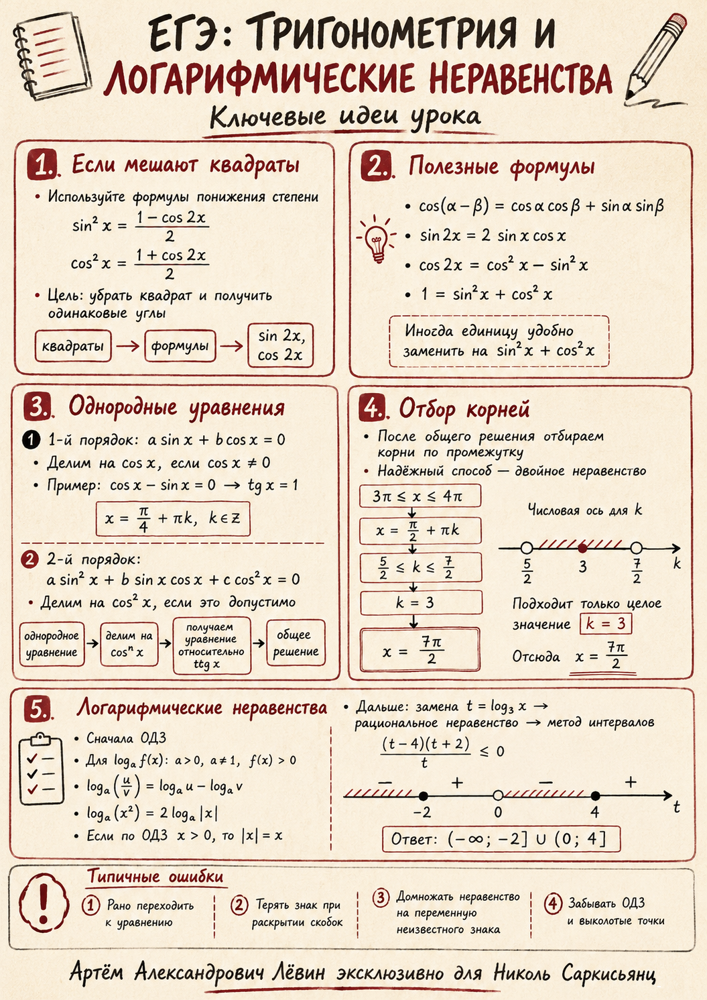

Главная идея занятия
Тригонометрия: если видим квадраты или разные углы, ищем формулу, которая приводит выражение к одному углу и простому произведению.
Логарифмы: сначала ОДЗ и нормальный вид дроби, потом критические точки и интервалы. Нельзя домножать на выражение неизвестного знака.
Образцовый тригонометрический пример
Уравнение с квадратами синуса и косинуса. Цель — убрать квадраты через формулы понижения степени.
sin²(x−π/4) содержит сдвиг угла, поэтому после понижения степени нужно раскрыть cos(2x−π/2).
После подстановки получаем простое уравнение:
Раскрываем двойные углы и заменяем 1 на sin²x+cos²x:
Первая ветвь: cosx=0. Вторая: cosx−sinx=0, деление на cosx допустимо, потому что при cosx=0 равенство не выполняется.
Логарифмический пример
- ОДЗ: x>0, x≠1.
- Свойства: log₃(9/x)=2−log₃x, а log₃x²=2log₃x, потому что x>0.
- Замена: t=log₃x, t≠0.
- Интервалы: ((t−4)(t+2))/t ≤ 0.
- Ответ: t∈(−∞;−2]∪(0;4], значит x∈(0;1/9]∪(1;81].
Типовые ошибки
- Забыть модуль в формуле logₐx²=2logₐ|x|.
- Домножить неравенство на переменную неизвестного знака.
- Потерять запрещённое значение t=0 или x=1.
- Не проверить деление на cosx в однородном уравнении.
Генератор похожей задачи
Мини-квиз
Почему в примере log₃x² можно заменить на 2log₃x без модуля?
Самопроверка
Исходная иллюстрация
Файл 07.07.26.png добавлен как визуальная опора к материалу.
